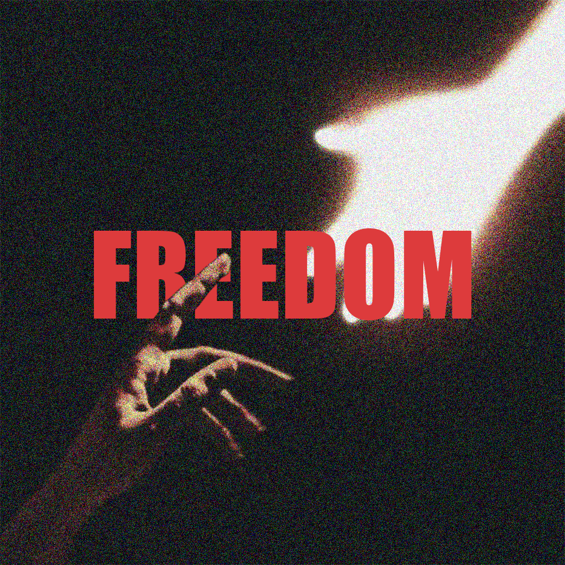

You aren't a diagnosis. You're a person finding their way.
Let's be honest: most of us start the journey here. At 2 AM, scrolling through forums, asking AI why we feel this way, and trying to piece together a puzzle that doesn't seem to fit.
When we hear the word 'PTSD,' we usually think of war zones and soldiers. But trauma doesn't wear a uniform.
It can happen at home, in school, or in the quiet moments of your childhood. It's a reaction to events that were too heavy to carry alone. If you've been searching for answers because professional help feels too scary or too distant, you've come to the right place.
I'm not a doctor — I'm an artist who has walked this path. I created this space to show you that while the struggle is real, the freedom is possible.
